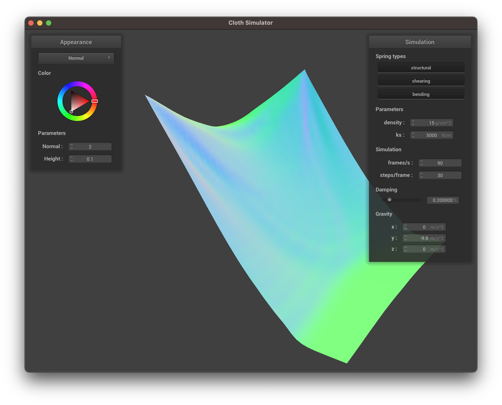
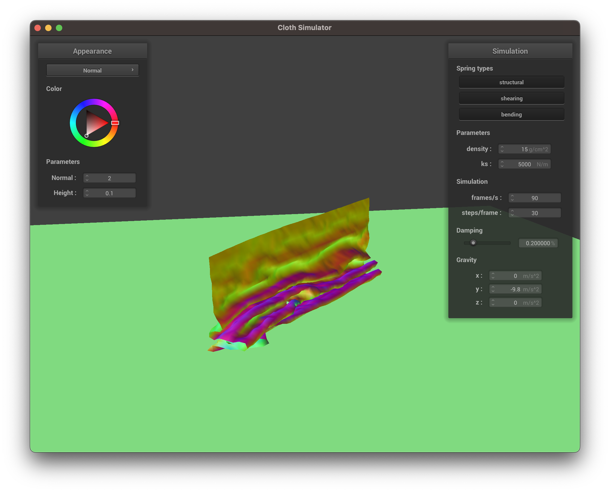
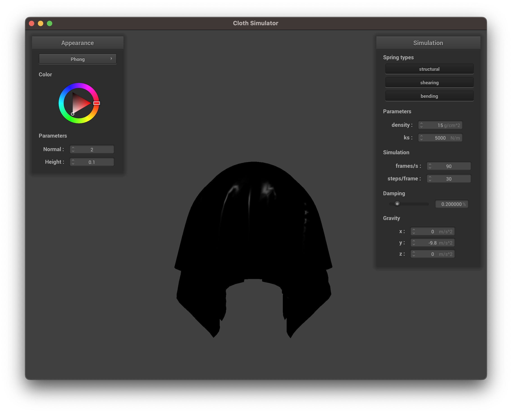

CS 184: Computer Graphics and Imaging, Spring 2023
Project 4: Cloth Simulator
Sebastian Arevalo
Overview
In this project, I implemented a cloth simulator which relied on spring mechanics and numerical integration to emulate (on the computer) how a cloth would act in real life when pinned, dropped, and upon collision, as well as various shading techniques to make the cloth appear realistic. First I had to implement a wireframe for the cloth, which involved utilizing point masses and springs to represent real-world physics to construct the cloth. Next I would implement numerical integration as a means of simulation how the newly formed cloth would act upon being dropped, with various influencing factors such as density, damping, and a spring constant. Afterwards I implemented collision handling, forcing the cloth not to fall through other objects, as well as itself, by implementing position correction should the cloth act in a manner that wouldn’t be realistic (such as phasing through objects or itself). Finally, I implemented shading, utilizing a variety of techniques ranging from Blinn-Phong Shading to texture mapping, all in an effort to expand the possible appearances of the cloth. The hardest part about every aspect of this project was computing physical variables (such as vectors and positions), and translating these computations accurately into the code. I overcame these obstacles by writing and drawing everything out beforehand, not trying to jump straight into the code as that seemed like an easy way to get very lost. Overall, a very exciting and rewarding project, I feel like I learned a lot about how simulation is done and how 3D-animation works. In my opinion, this was a fantastic assignment to end off on!
Part 1: Masses and Springs
Take some screenshots of scene/pinned2.json from a viewing angle where you can clearly see the cloth wireframe to show the structure of your point masses and springs.
|
One View (pinned2.json)
|
Another View (pinned2.json)
|
Show us what the wireframe looks like (1) without any shearing constraints, (2) with only shearing constraints, and (3) with all constraints.
|
Without Any Shearing Constraints (pinned2.json)
|
 With Only Shearing Constraints (pinned2.json)
With Only Shearing Constraints (pinned2.json)
|
|
With All Constraints (pinned2.json)
|
Part 2: Simulation via Numerical Integration
Experiment with some the parameters in the simulation. To do so, pause the simulation at the start with P, modify the values of interest, and then resume by pressing P again. You can also restart the simulation at any time from the cloth's starting position by pressing R.
Describe the effects of changing the spring constant ks; how does the cloth behave from start to rest with a very low ks? A high ks?
When compared to the default ks (ks = 5000), a low ks (such as ks = 50) causes the cloth to appear much more “loose,” having more folds form (especially near the top of the cloth) as the cloth falls. When compared to the default ks, a high ks (such as ks = 50000) causes the cloth to appear much more “taut,” having fewer folds form (near the top of the cloth) as the cloth falls. Interestingly, when the ks is very high (such as ks = 230000), the cloth begins to have a bunch of bumps along it as if it’s struggling to stay together as it's “torn” apart.
What about for density?
When compared to the default density (density = 15), a low density (such as density = 1) causes the cloth to appear “lighter”, with less folds and creases along the cloth. When compared to the default density, a high density (such as density = 1000) causes the cloth to appear “heavier”, with more folds and creases. However, while the cloth appears heavier, I timed the fall speed and it was roughly the same no matter the density, meaning the density change had a greater effect when the cloth was resting rather than when it was falling.
What about for damping?
Unlike the previous two parameters, changing the amount of damping doesn’t appear to have any significant impact on the resting state of the cloth. However, when compared to the default damping (damping = 20%), a low damping (such as damping of about 5%) results in the cloth falling much faster and becoming more disturbed as it falls (more folds and bumps along the cloth). Meanwhile, when compared to the default damping, a high damping (such as damping of about 50%) results in the cloth falling much slower and smoothly, with nearly no creases forming as the cloth falls.
For each of the above, observe any noticeable differences in the cloth compared to the default parameters and show us some screenshots of those interesting differences and describe when they occur.
Note: All the images below were made using pinned2.json.
|
Default ks (5000)
|
Small ks (50)
|
Large ks (100000)
|
The default ks result in a single somewhat deep fold at the top of the cloth, but as the ks decreases so does the “tension” of the cloth and thus more folds begin to fold, and vice versa as the ks increases the “tension” of the cloth does as well and thus the fold at the top begins to fade.
|
Default Density (15)
|
Small Density (1)
|
Large Density (1000)
|
The changes density result in similar effects as the changes in ks (but with adverse effects), with the default density resulting in a single fold at the top of the cloth, and a lower density resulting in the fold fading while a higher density resulting in more folds forming.
|

Default Damping (20%)
|
Small Damping (~5%)
|
Large Damping (~50%)
|
The most noticeable difference when changing the damping is the speed in the cloth the cloth falls. However, as the website can only hold still images, the next best observable difference are the disturbances formed and possible positions as the cloth falls, with lower damping resulting in more disturbances and allowing the cloth to fall so fast that it reaches “behind” the pinned points, and a higher damping resulting in fewer disturbances an a very smooth cloth while falling.
Show us a screenshot of your shaded cloth from scene/pinned4.json in its final resting state! If you choose to use different parameters than the default ones, please list them.
|
Default Parameters (pinned4.json)
|
Part 3: Handling Collisions with Other Objects
Show us screenshots of your shaded cloth from scene/sphere.json in its final resting state on the sphere using the default ks = 5000 as well as with ks = 500 and ks = 50000. Describe the differences in the results.
 Default ks (5000)
Default ks (5000)
|
Small ks (500)
|
Large ks (50000)
|
As seen above, the higher the ks value, the more “stiff” the cloth appears to be. When the ks value is 500, the cloth is “loose” and fully wraps around the top half of the sphere before hanging down past the bottom half of the sphere. When the ks value is 5000, a greater portion of the cloth begins to hang and the cloth begins to “poke” outward. Finally, when the ks value is 50000, large portions of the cloth “poke” outward and looks almost like an umbrella on top of the sphere rather than wrapping around the sphere itself.
Show us a screenshot of your shaded cloth lying peacefully at rest on the plane. If you haven't by now, feel free to express your colorful creativity with the cloth! (You will need to complete the shaders portion first to show custom colors.)
Part 4: Handling Self-Collisions
Show us at least 3 screenshots that document how your cloth falls and folds on itself, starting with an early, initial self-collision and ending with the cloth at a more restful state (even if it is still slightly bouncy on the ground).
|
Initial Folding
|
Intermediate Folding
|
|

Closing Folding
|
Rested Folding
|
Vary the density as well as ks and describe with words and screenshots how they affect the behavior of the cloth as it falls on itself.
|
Initial Folding (ks=50)
|
Intermediate Folding (ks=50)
|
 Rested Folding (ks=50)
Rested Folding (ks=50)
|
|
Initial Folding (ks=50000)
|
Intermediate Folding (ks=50000)
|
Rested Folding (ks=50000)
|
Just like in the previous simulations, the lower the ks value, the more “loose” the cloth appears to be, with this simulation highlighting this feature by showing how the cloth continuously folds in on itself. Meanwhile as the ks value increases, the cloth becomes more “stiff,” resisting folding in on itself too much until the very end where it just has one simple big fold.
|
Initial Folding (density=1)
|
Intermediate Folding (density=1)
|
Rested Folding (density=1)
|
|
Initial Folding (density=1000)
|
Intermediate Folding (density=1000)
|
Rested Folding (density=1000)
|
Changing density has an opposite effect when compared to changing the ks value, as where a lower ks value lead to a “looser” cloth, a higher density value is what ends up leading to the same result, with a high density leading to the cloth again folding in on itself multiple times and appearing almost “crumpled up.” Meanwhile, as expected, a lower density leads to the cloth barely folding in on itself, with its resting position leads to a single big smooth fold.
Part 5: Shaders
Explain in your own words what is a shader program and how vertex and fragment shaders work together to create lighting and material effects.
A shader program is a program (which typically runs on the GPU) that is responsible for executing portions of the rasterization pipeline, taking in a variety of inputs to output the 4-dimensional vectors that we’ve become familiar with in the course thus far (that is, xyzw). Vertex shaders will perform transformations onto vertices, and send all geometric information associated with these updated vertices into a fragment shader, which utilize these values and to compute the color to be outputted (the computation itself is varied based on how the fragment shader is implemented, with an example being the fragment shader taking the geometric information to conduct Blinn-Phong Shading).
Explain the Blinn-Phong shading model in your own words. Show a screenshot of your Blinn-Phong shader outputting only the ambient component, a screen shot only outputting the diffuse component, a screen shot only outputting the specular component, and one using the entire Blinn-Phong model.
|
Ambient Shading
|
Diffuse Shading
|
|

Specular Shading
|
Blinn-Phong Shading
|
The Blinn-Phong shading model combines three types of shadings: ambient, diffuse, and specular. Ambient shading is the shading that isn’t directly affected by the surrounding light sources, and is just the “default” color of an object in a scene. Diffuse shading is the shading that isn’t affected by the viewing direction, so while the light sources impact the color of this shading, the color will look the same regardless of where the “camera view” is. Specular shading is the shading that is both affected by the light sources and by the viewing direction, causing surfaces in the viewing direction to be far brighter than those not in the viewing direction. By combining these three types of shading, the Blinn-Phong shading model results in a realistic color scheme representative of how we view the real world, taking into account the positions of lights, our eyes, and just the nature of the scene itself.
Show a screenshot of your texture mapping shader using your own custom texture by modifying the textures in /textures/.
Show a screenshot of bump mapping on the cloth and on the sphere. Show a screenshot of displacement mapping on the sphere. Use the same texture for both renders. You can either provide your own texture or use one of the ones in the textures directory, BUT choose one that's not the default texture_2.png. Compare the two approaches and resulting renders in your own words. Compare how your the two shaders react to the sphere by changing the sphere mesh's coarseness by using -o 16 -a 16 and then -o 128 -a 128.
 Bump Sphere & Cloth
Bump Sphere & Cloth
|
Bump Cloth on Sphere
|
|
Displacement Sphere
|
Displacement Cloth on Sphere
|
Using bump mapping and displacement mapping lead to very similar results, with the defining features of the texture popping out in both and appearing to feel somewhat rough to the touch. However, the displacement mapping does lead to a more “realistic” render in that it produces “imperfect” results (such as the fact that the sphere isn’t a perfect sphere, with a few dents and ridges on it), contrasting the bump mapping which, while still does look realistic, looks more like a computer render because it’s “too perfect.”
|
Bump Sphere (-o 16 -a 16)
|
Displacement Sphere (-o 16 -a 16)
|
|
Bump Sphere (-o 128 -a 128)
|
Displacement Sphere (-o 128 -a 128)
|
The bump mapping appears to be more impacted by the coarseness of the sphere’s mesh than the displacement mapping. However, this makes sense, as the bump mapping is a direct representation of the mesh of the sphere, but the displacement mapping was “roughed up” to begin with. So even when the coarseness of the sphere decreases, the quality of the displacement mapping sphere doesn’t have much of an effect (at least when compared to the slight drop in quality in the bump mapping sphere).
Show a screenshot of your mirror shader on the cloth and on the sphere.
|
Mirror Sphere & Cloth
|
Mirror Cloth on Sphere
|